내 브랜드 정보를 넣고, 캠페인을 만들어 게재하고, 결과를 읽고,
무엇이 잘못됐는지 찾아 고친 뒤 다시 게재해 성과가 나아졌는지 확인합니다.
실제 광고비는 한 푼도 쓰지 않습니다.
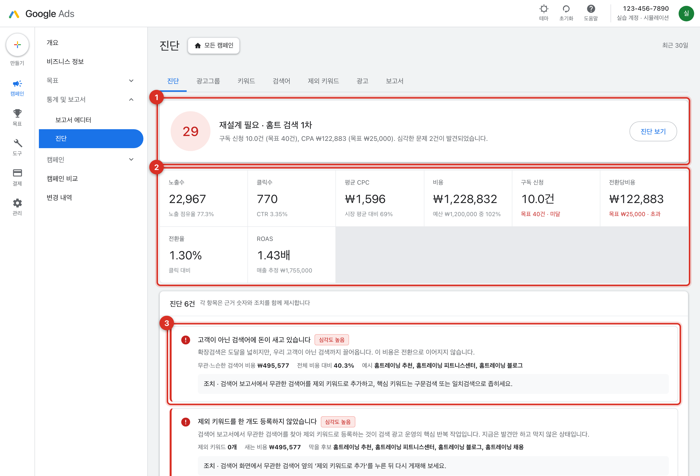
실습 도구
redskio.github.io/google-ads-search-sim
소요 시간
90 ~ 120분
준비물
노트북, 최신 브라우저
사전 지식
필요 없음
이 실습에 대하여
광고를 글로만 배우면 "확장검색은 도달이 넓다" 같은 문장만 남습니다.
이 실습은 직접 설정을 바꾸고 그 결과를 숫자로 마주하는 방식입니다.
무엇을 할 수 있게 되나
내 사업에 맞는 캠페인 목표와 전환 액션을 스스로 정의할 수 있다.
키워드의 검색유형을 골라 도달과 정확도를 조절할 수 있다.
검색어 보고서를 읽고 새는 돈을 찾아 막을 수 있다.
성과가 나쁠 때 도달·클릭·전환 중 어디가 문제인지 짚어낼 수 있다.
보고서를 내려받아 근거를 갖고 설명할 수 있다.
실습에 쓸 예시 브랜드
가이드는 홈핏이라는 가상의 브랜드로 설명합니다. 본인 브랜드나 관심 있는 브랜드로 바꿔서 해도 됩니다.
오히려 그 편이 배우는 게 많습니다.
업체 이름
홈핏
업종
헬스 · 피트니스
상품
집에서 하는 20분 홈트레이닝 온라인 클래스 (월 39,000원 구독)
타겟 고객
헬스장 갈 시간이 없는 20~40대 직장인
실습 목표
30일간 구독 신청 40건, 전환당비용 25,000원 이하, 총예산 120만원
중요 — 이 도구는 시뮬레이션입니다. 숫자는 실제 시장 구조를 본떠 만든 것이지
특정 업체의 실제 성과가 아닙니다. 배우는 것은 숫자 자체가 아니라 인과관계입니다.
목차
0화면 구조 익히기5분
1비즈니스 정보 입력 — 시뮬레이션의 기준값10분
2전환 액션 정의 — 무엇이 성공인가10분
3첫 캠페인 만들기 (9단계 마법사)30분
4결과 읽기 — 진단·지표·추이15분
5광고그룹과 키워드 실적 보기10분
6검색어 보고서 → 제외 키워드 → 재게재 루프20분
7디스플레이 캠페인과 게재위치 제외15분
8보고서 내려받기5분
A부록 · 실습 과제 6종—
B부록 · 지표 사전—
C부록 · 강사용 운영 노트—
0화면 구조 익히기
실제 Google Ads와 같은 구조입니다. 여기서 익힌 위치 감각이 실무에서 그대로 통합니다.
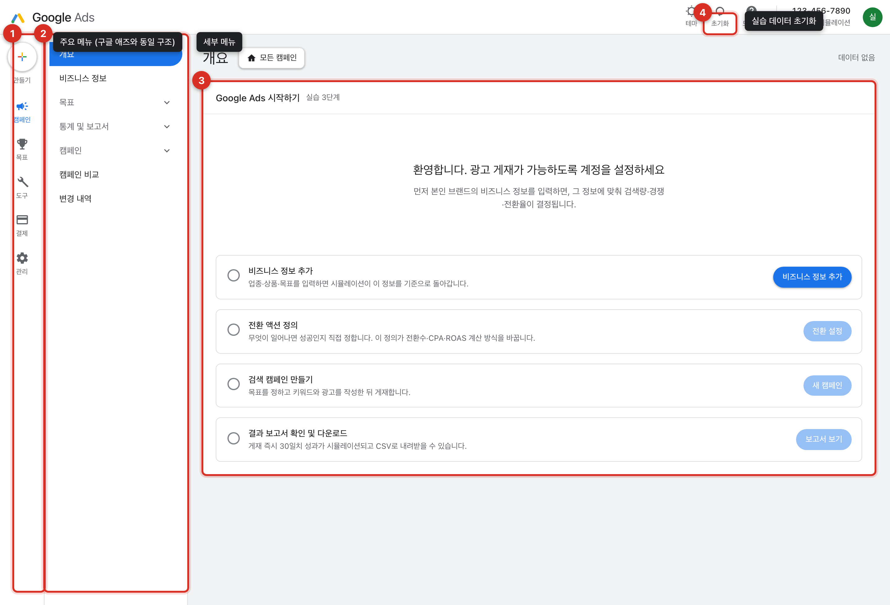
주요 메뉴 레일 — 만들기 · 캠페인 · 목표 · 도구 · 결제 · 관리. 실제 Google Ads와 같은 6개입니다.
실습에서는 만들기와 캠페인, 목표를 씁니다.
세부 메뉴 — 왼쪽 레일에서 고른 영역의 하위 화면들이 여기 나옵니다.
캠페인을 게재하면 광고그룹·키워드·검색어·제외 키워드·게재위치 항목이 채워집니다.
실습 체크리스트 — 무엇을 먼저 해야 하는지 순서대로 보여줍니다. 위에서부터 하나씩 하면 됩니다.
초기화 — 실습 데이터를 모두 지우고 처음부터 다시 시작합니다.
여러 번 반복 실습할 때 씁니다. 옆의 테마는 밝게/어둡게 전환입니다.
기억할 것 — 진행 상황은 내 브라우저에만 저장됩니다.
서버로 올라가지 않으니 마음껏 망쳐도 됩니다. 다만 브라우저 데이터를 지우면 실습도 사라집니다.
1비즈니스 정보 입력
여기 입력한 내용이 시뮬레이션의 기준값이 됩니다.
같은 캠페인이라도 업종이 다르면 단가가 다르고, 설명이 부실하면 키워드 적합도가 떨어집니다.
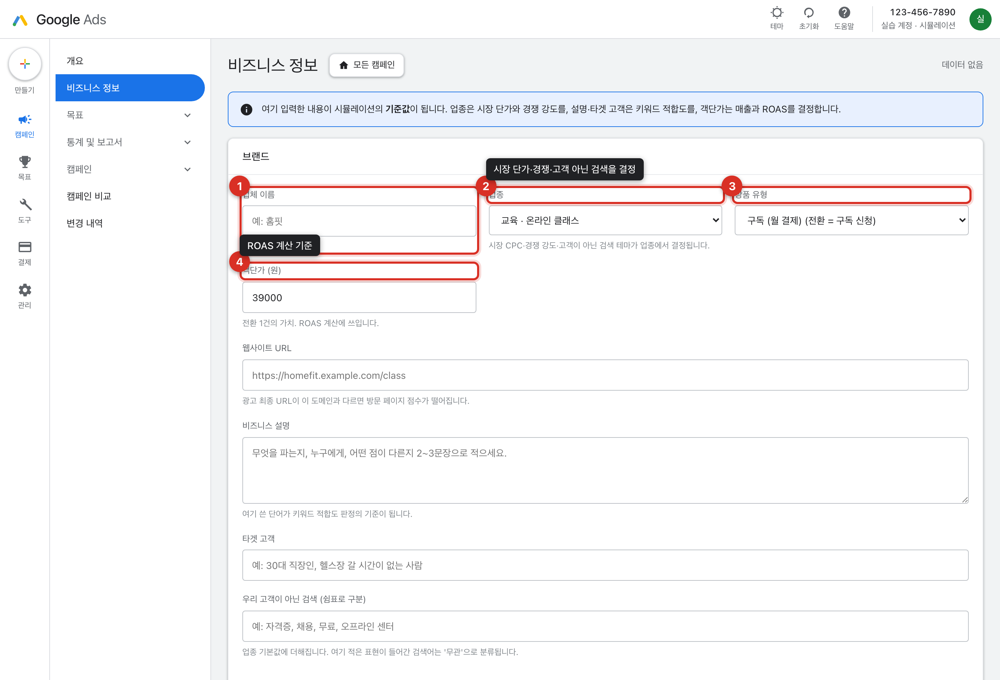
업체 이름 — 광고문구에 이 이름을 넣으면 클릭률이 오릅니다.
또 이 이름이 들어간 키워드는 브랜드 검색으로 분류되어 훨씬 싸고 잘 전환됩니다.
업종 — 가장 큰 영향을 줍니다. 시장 클릭당비용, 경쟁 강도, 기기·시간대 분포,
그리고 "우리 고객이 아닌 검색" 후보가 모두 업종에서 결정됩니다.
금융은 교육보다 클릭이 2배 이상 비쌉니다.
상품 유형 — 구독 / 단건 판매 / 상담 신청 / 예약. 전환의 성격과 고객 1명의 가치가 달라집니다.
객단가 — 전환 1건의 값. ROAS(광고비 대비 매출) 계산의 기준입니다.
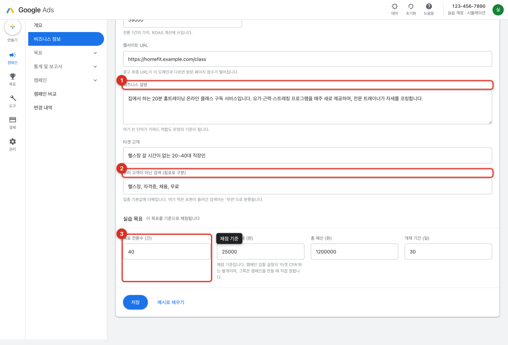
비즈니스 설명 — 여기 쓴 단어가 키워드 적합도 판정의 사전이 됩니다.
"판매" 한 단어만 쓰면 대부분의 키워드가 "관련 약함"으로 나옵니다.
무엇을, 누구에게, 어떤 점이 다른지 2~3문장으로 쓰세요.
우리 고객이 아닌 검색 — 업종 기본값에 더해집니다.
여기 적은 표현이 들어간 검색어는 "무관"으로 분류되어 낭비 비용으로 집계됩니다.
실습 목표 — 채점 기준입니다. 목표 전환수와 목표 전환당비용을 기준으로 점수가 매겨집니다.
캠페인 설정의 타겟 CPA와는 별개입니다.
비즈니스 정보 화면에서 예시로 채우기를 눌러 홈핏 정보를 넣고 저장하세요.
저장한 뒤 업종만 금융 · 보험으로 바꿔 다시 저장해 보세요.
다시 헬스 · 피트니스로 되돌립니다.
생각해 볼 것 — 업종을 바꾸면 왜 클릭당비용이 달라질까요?
실제 광고 시장에서 금융 키워드가 비싼 이유는 무엇일까요?
2전환 액션 정의
광고에서 가장 많이 틀리는 지점입니다. 전환은 자동으로 정해지지 않습니다.
"무엇이 일어나면 성공인가"를 광고주가 직접 정해야 하고, 그 정의가 모든 숫자를 바꿉니다.
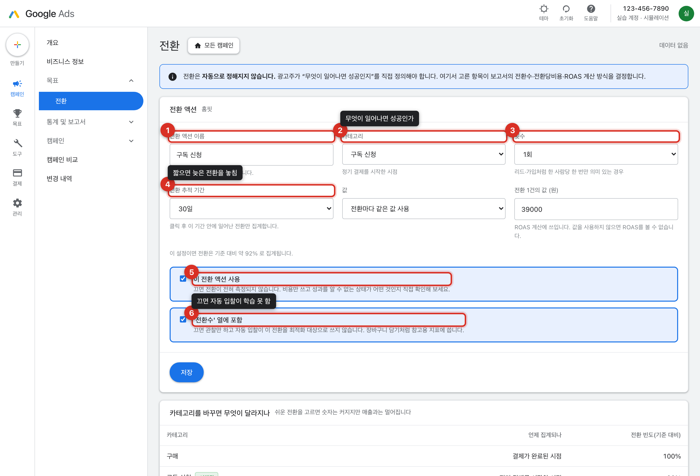
전환 액션 이름 — 보고서의 열 제목으로 그대로 쓰입니다. "구독 신청", "상담 신청"처럼 구체적으로.
카테고리 — 가장 중요합니다. 구매·구독 신청처럼 돈이 오가는 시점으로 잡을지,
장바구니 담기·페이지 조회처럼 쉬운 행동으로 잡을지에 따라 전환수가 10배까지 차이 납니다.
횟수 — 한 사람이 여러 번 해도 1번만 셀지, 매번 셀지.
리드·가입은 1회, 반복 구매가 있는 쇼핑몰은 모든 횟수가 맞습니다.
전환 추적 기간 — 클릭 후 며칠 안에 일어난 전환까지 인정할지.
고민이 긴 상품(B2B·금융)에서 기간이 짧으면 성과를 놓칩니다.
이 전환 액션 사용 — 끄면 전환이 전혀 측정되지 않습니다. 일부러 꺼서 확인해 보세요.
'전환수' 열에 포함 — 끄면 관찰만 하고 자동 입찰이 최적화 대상으로 쓰지 않습니다.
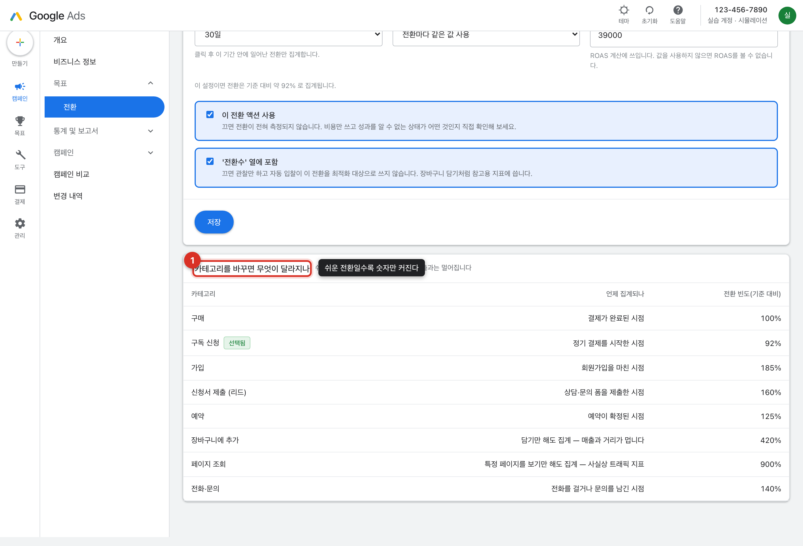
화면 아래 표는 카테고리별 전환 빈도를 보여줍니다.
페이지 조회는 구매 대비 9배 자주 일어납니다. 전환수가 9배로 보이지만 매출은 그대로입니다.
핵심 — 쉬운 전환을 고르면 보고서 숫자는 예뻐지지만
자동 입찰이 잘못된 신호를 향해 최적화됩니다. 결국 돈은 더 쓰고 매출은 그대로입니다.
전환 카테고리를 구독 신청으로 두고 저장합니다.
나중에 캠페인을 게재한 뒤, 카테고리만 페이지 조회로 바꿔 저장해 보세요.
(기존 캠페인 성과가 새 기준으로 다시 집계됩니다.)
전환수와 전환당비용이 어떻게 달라지는지 적어 두세요.
생각해 볼 것 — 전환수가 늘었는데 회사 매출은 그대로라면,
그 보고서를 대표에게 어떻게 설명해야 할까요?
3첫 캠페인 만들기
왼쪽 위 ＋ 만들기 버튼을 누르면 9단계 마법사가 열립니다.
실제 Google Ads와 같은 순서입니다.
3-1 · 캠페인 목표
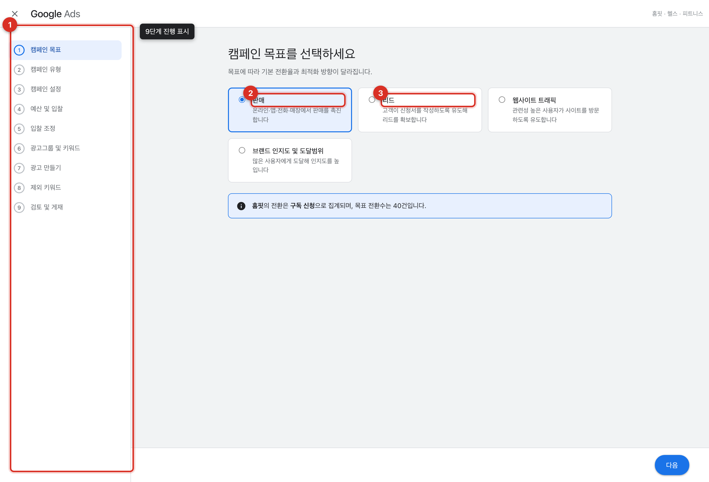
단계 표시 — 지금 어디쯤인지. 지나온 단계를 눌러 되돌아갈 수 있습니다.
판매 — 구매·구독처럼 돈이 오가는 행동이 목적일 때.
리드 — 상담 신청·문의처럼 연락처를 받는 것이 목적일 때. 전환은 더 자주 일어나지만 1건의 가치는 낮습니다.
목표에 따라 기본 전환율이 달라집니다. 홈핏은 구독 상품이므로 판매를 고릅니다.
3-2 · 캠페인 유형
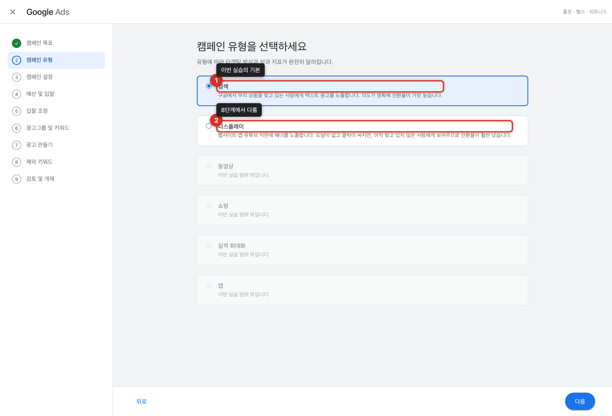
검색 — 이미 찾고 있는 사람에게 보여줍니다. 의도가 명확해 전환율이 가장 높습니다. 먼저 이것부터 합니다.
디스플레이 — 아직 찾고 있지 않은 사람에게 배너를 보여줍니다.
도달이 넓고 클릭이 싸지만 전환율은 훨씬 낮습니다. 7장에서 다룹니다.
3-3 · 캠페인 설정
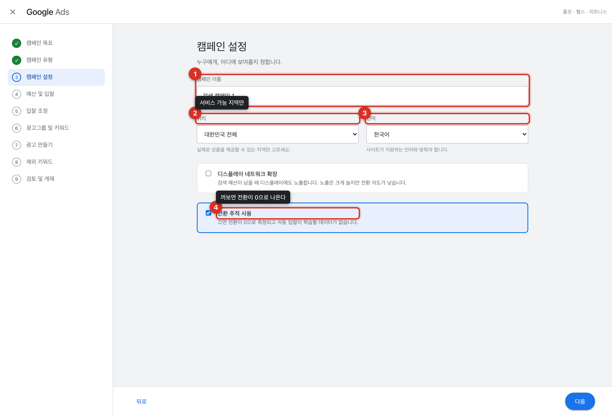
캠페인 이름 — 나중에 여러 캠페인을 비교할 때 구분되도록 씁니다. "홈트 검색 1차"처럼.
위치 — 실제로 상품을 제공할 수 있는 지역만 고릅니다.
"전 세계"를 고르면 노출은 늘지만 전환되지 않는 클릭에 돈을 씁니다.
언어 — 사이트가 지원하는 언어와 맞춰야 합니다.
전환 추적 사용 — 실습에서 한 번은 꺼 보세요. 비용만 쓰고 성과를 알 수 없는 상태가 어떤 것인지 체감됩니다.
3-4 · 예산 및 입찰
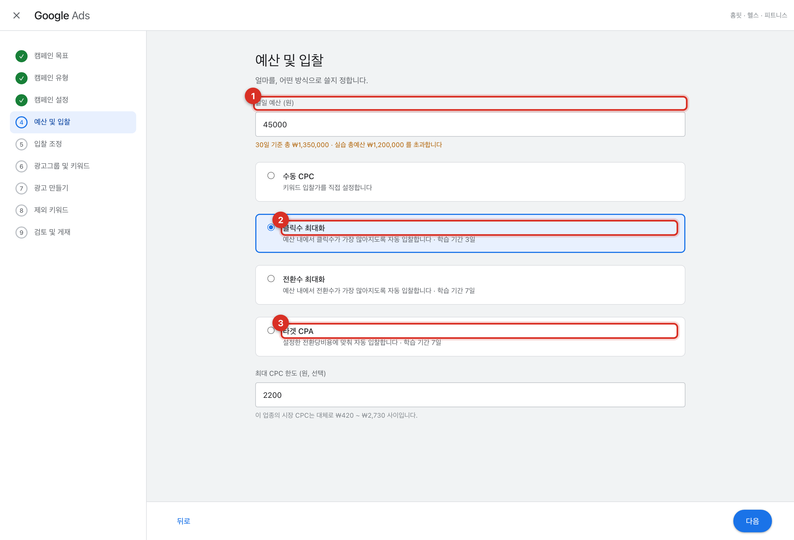
일일 예산 — 하루에 쓸 금액. 아래에 30일 기준 총액과 실습 총예산 대비가 표시됩니다.
클릭수 최대화 — 예산 안에서 클릭이 가장 많아지도록 자동 입찰합니다. 처음 시작할 때 무난합니다.
타겟 CPA — 전환당비용 목표를 정하면 시스템이 거기 맞춰 입찰합니다.
전환 데이터가 쌓인 뒤에 쓰는 전략입니다.
입찰 전략
언제 쓰나
학습 기간
수동 CPC
키워드마다 직접 통제하고 싶을 때
없음
클릭수 최대화
트래픽을 빨리 모아야 할 때
3일
전환수 최대화
전환 데이터가 충분히 쌓였을 때
7일
타겟 CPA
전환당비용을 일정하게 관리할 때
7일
학습 기간 — 자동 입찰은 데이터를 모으는 동안 일부러 다양한 입찰을 시도합니다.
이 기간 성과가 낮은 건 정상입니다. 중간에 설정을 바꾸면 학습이 처음부터 다시 시작됩니다.
3-5 · 타겟 CPA를 골랐다면
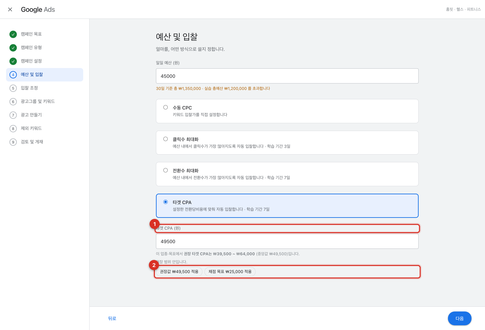
타겟 CPA 직접 입력 — 값은 여러분이 정합니다. 낮게 잡을수록 전환당비용은 싸지지만 노출량이 줄어듭니다.
권장 범위 — 이 업종·목표에서 현실적으로 달성 가능한 범위를 계산해 보여줍니다.
버튼을 눌러 바로 적용할 수 있습니다.
흔한 실수 — 목표가 25,000원이라고 타겟 CPA에도 25,000원을 넣으면,
시장가보다 너무 낮아 입찰 자체를 포기해 노출이 거의 안 나옵니다.
성과가 나쁜 게 아니라 경매에 참여를 못 한 것입니다. 처음에는 권장값으로 시작해 데이터를 쌓은 뒤 조금씩 낮추세요.
3-6 · 입찰 조정
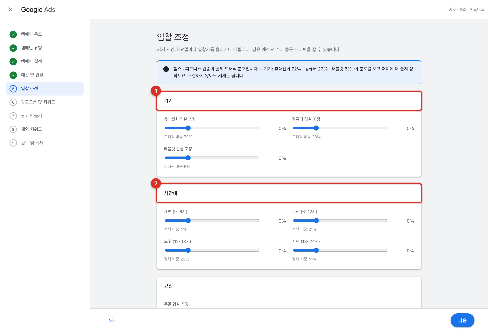
기기별 조정 — 각 기기의 실제 트래픽 비중이 옆에 표시됩니다.
B2B는 컴퓨터가 69%, 지역 서비스는 휴대전화가 86%로 업종마다 완전히 다릅니다.
시간대별 조정 — 새벽·오전·오후·저녁 네 구간. 아래로는 -90%, 위로는 +300%까지.
처음에는 조정하지 않고 게재해도 됩니다. 결과를 본 뒤 어느 기기·시간대의 전환당비용이 나쁜지
확인하고 나서 조정하는 것이 순서입니다.
3-7 · 광고그룹 및 키워드
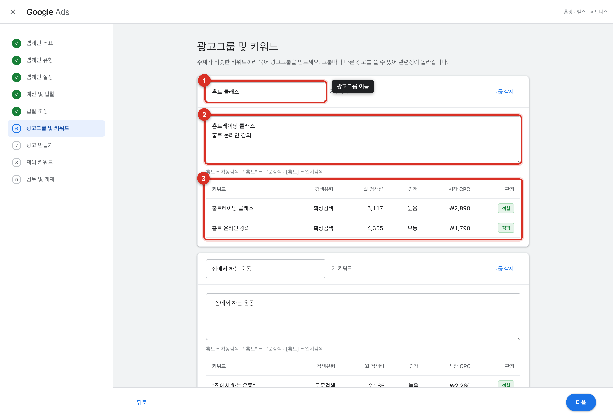
광고그룹 이름 — 키워드 주제를 그대로 씁니다. "홈트 클래스", "집에서 하는 운동"처럼.
키워드 입력 — 한 줄에 하나씩. 실제 Google Ads와 같은 기호를 씁니다.
키워드 진단 — 입력하는 즉시 검색량·경쟁·시장 단가·판정이 나옵니다.
입력 방식
검색유형
어떤 검색에 노출되나
홈트
확장검색
관련 있다고 판단되는 넓은 범위. 무관한 검색도 많이 들어옵니다.
"홈트"
구문검색
그 표현이 순서대로 들어간 검색.
[홈트]
일치검색
거의 그 표현 그대로인 검색만.
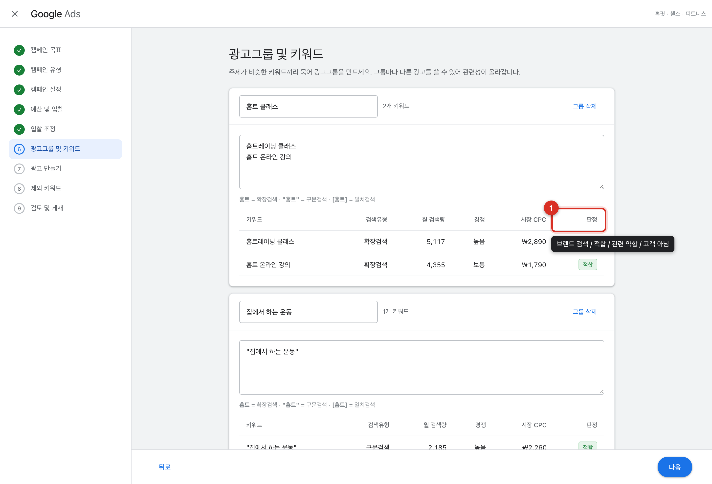
판정 — 내 비즈니스 정보를 기준으로 각 키워드를 평가합니다.
브랜드 검색 싸고 잘 전환되지만 물량이 적음
적합 우리 사업 언어와 잘 맞음
관련 약함 연결이 느슨함
고객 아님 클릭은 나와도 전환되지 않음
광고그룹을 나누는 이유 — 광고그룹마다 다른 광고문구를 쓸 수 있습니다.
키워드 3개를 한 그룹에 몰면 어느 키워드에도 딱 맞지 않는 광고가 되고 품질평가점수가 떨어집니다.
주제별로 나누면 같은 키워드로도 점수가 5.5점 → 9.0점까지 올라갑니다.
3-8 · 광고 만들기
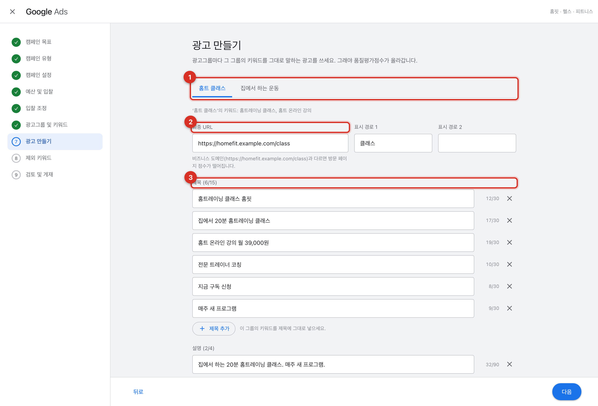
광고그룹 탭 — 그룹마다 별도의 광고를 씁니다. 탭을 눌러 오갑니다.
최종 URL — 클릭한 사람이 도착할 페이지.
비즈니스 도메인과 다르면 방문 페이지 점수가 떨어지고 전환이 무너집니다.
제목 — 최대 15개. 8개 이상을 권장합니다.
그 광고그룹의 키워드를 제목에 그대로 넣으세요. 이게 품질평가점수를 가장 크게 좌우합니다.
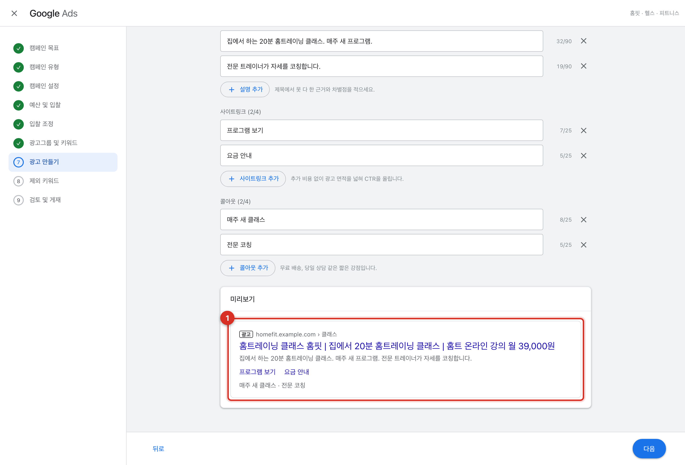
미리보기 — 검색 결과에 실제로 어떻게 보이는지. 제목 3개와 설명 2개가 조합되어 나갑니다.
문구가 성과를 가르는 방식 — 광고에 가격·조건을 밝히면 클릭은 줄지만
클릭한 사람의 구매 의사는 높습니다. 반대로 "무료·경품"을 앞세우면 클릭은 몰리는데 전환은 안 됩니다.
클릭이 많은 것이 항상 좋은 게 아닙니다.
3-9 · 제외 키워드
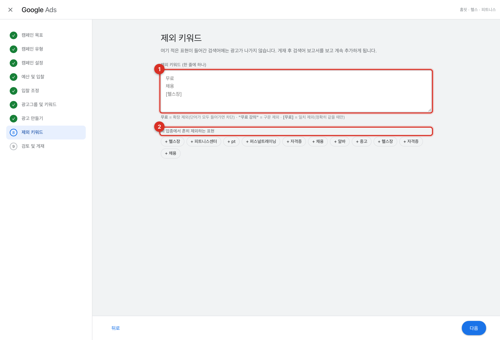
제외 키워드 입력 — 여기 적은 표현이 들어간 검색어에는 광고가 나가지 않습니다.
업종별 추천 — 이 업종에서 흔히 제외하는 표현입니다. 눌러서 바로 추가할 수 있습니다.
처음에는 비워 두고 게재해도 됩니다. 6장에서 검색어 보고서를 보고 채우는 것이 진짜 실습입니다.
주의 — 제외 키워드를 너무 넓게 잡으면 내 키워드까지 막습니다.
확장 제외(무료)는 그 단어가 들어가기만 하면 전부 차단합니다.
정확히 하나만 막으려면 일치 제외([무료])를 쓰세요.
3-10 · 검토 및 게재
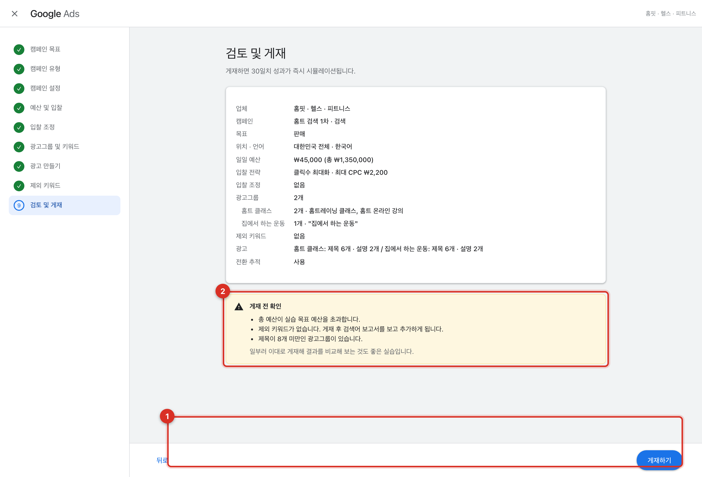
설정 요약 — 지금까지 정한 것 전체. 게재 전 마지막으로 확인합니다.
게재 전 확인 — 문제가 될 만한 설정을 미리 알려줍니다.
다만 일부러 무시하고 게재해 결과를 보는 것도 좋은 실습입니다.
아래 설정으로 첫 캠페인을 만들고 게재하세요.
· 목표 판매 / 유형 검색 / 이름 홈트 검색 1차 · 일일 예산 45,000원 / 클릭수 최대화 · 광고그룹 1 홈트 클래스 — 홈트레이닝 클래스, 홈트 온라인 강의 (둘 다 확장검색)
· 광고그룹 2 집에서 하는 운동 — "집에서 하는 운동" · 제외 키워드는 비워 둡니다
각 광고그룹의 제목에 그 그룹의 키워드를 그대로 넣으세요.
왜 제외 키워드를 비워 두나 — 6장에서 낭비를 직접 발견하고 막는 과정을
체험하기 위해서입니다. 처음부터 막아 두면 무엇을 막았는지 알 수 없습니다.
4결과 읽기
게재하면 30일치 성과가 즉시 시뮬레이션되고 진단 화면으로 이동합니다.
점수와 판정 — 목표 대비 100점 만점. 전환수 45점 + 전환당비용 35점 + 효율 20점으로 구성됩니다.
60점 이상이면 합격입니다.
핵심 지표 — 노출수·클릭수·평균 CPC·비용·전환수·전환당비용·전환율·ROAS.
목표 미달 항목은 빨간색으로 표시됩니다.
진단 — 심각도 순으로 정렬됩니다. 각 항목은 문제 → 왜 그런가 → 근거 숫자 → 조치 순서입니다.
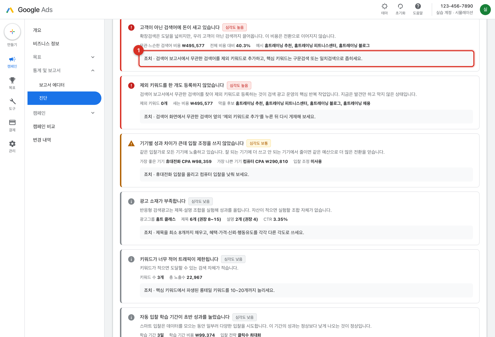
조치 — 무엇을 어떻게 바꿀지 구체적으로 알려줍니다. 이 문장 그대로 따라 하면 개선됩니다.
성과가 나쁠 때 어디를 보나
광고는 노출 → 클릭 → 전환 세 단계입니다. 어느 단계가 고장 났는지부터 가려야 합니다.
증상
확인할 지표
흔한 원인
노출이 안 나옴
노출 점유율, 노출 손실(예산/순위)
입찰가가 시장보다 낮음 · 예산 부족 · 타겟 CPA가 비현실적 · 키워드 검색량 자체가 적음
클릭이 안 됨
CTR, 품질평가점수 중 '광고 관련성'
광고문구에 키워드가 없음 · 제목이 적음 · 광고 확장 미사용 · 순위가 낮음
전환이 안 됨
전환율, 품질평가점수 중 '방문 페이지'
랜딩 페이지가 광고와 다름 · 무관한 검색어 유입 · 전환 추적 꺼짐 · 미끼성 문구
가장 중요한 감각 — 노출과 클릭이 좋은데 전환만 없는 경우가 실무에서 가장 흔합니다.
이때 광고를 더 돌리는 건 답이 아닙니다. 검색어와 랜딩 페이지를 봐야 합니다.
일별 추이 보기
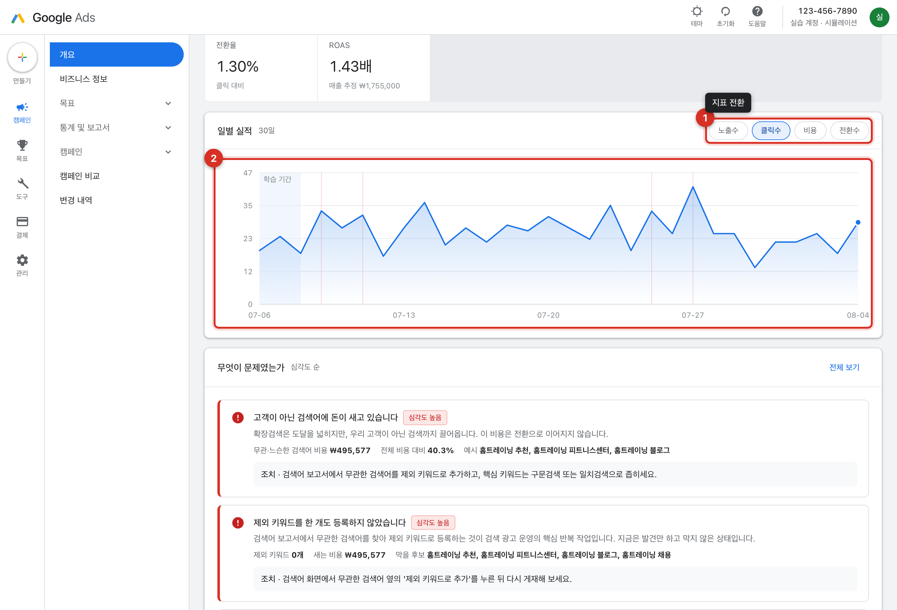
지표 전환 — 노출수·클릭수·비용·전환수를 바꿔 가며 봅니다.
일별 추이 — 왼쪽 파란 음영은 자동 입찰 학습 기간입니다. 이 구간 성과가 낮은 건 정상입니다.
세로 빨간 선은 예산이 소진된 날입니다.
숫자를 너무 믿지 마세요 — 이 시뮬레이터는 확률 기반입니다.
전환이 12건 나왔다면 같은 품질의 캠페인이 8건에서 17건 사이로도 나옵니다.
2~3건 차이는 성과 차이가 아니라 운입니다. 실제 광고도 똑같습니다.
진단 화면에서 심각도 높음 항목을 모두 읽고, 각각 어느 단계(노출·클릭·전환)의 문제인지 분류하세요.
일별 추이에서 지표를 비용으로 바꿔 예산 소진일이 있는지 확인하세요.
가장 먼저 고쳐야 할 것 하나를 정하고 그 이유를 한 문장으로 쓰세요.
5광고그룹과 키워드 실적
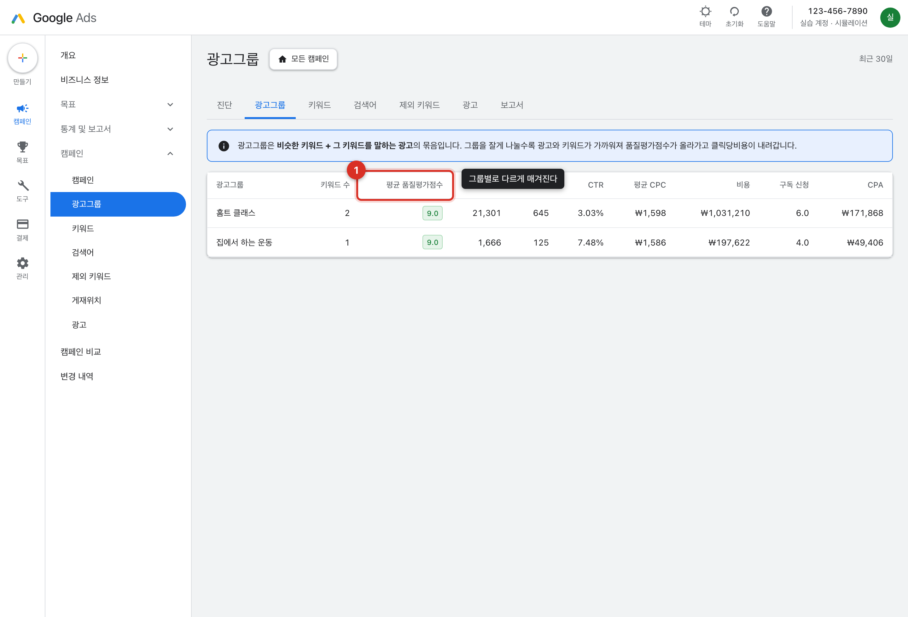
평균 품질평가점수 — 그룹마다 다르게 매겨집니다.
점수가 낮은 그룹은 광고문구가 그 그룹의 키워드를 말하고 있지 않다는 뜻입니다.
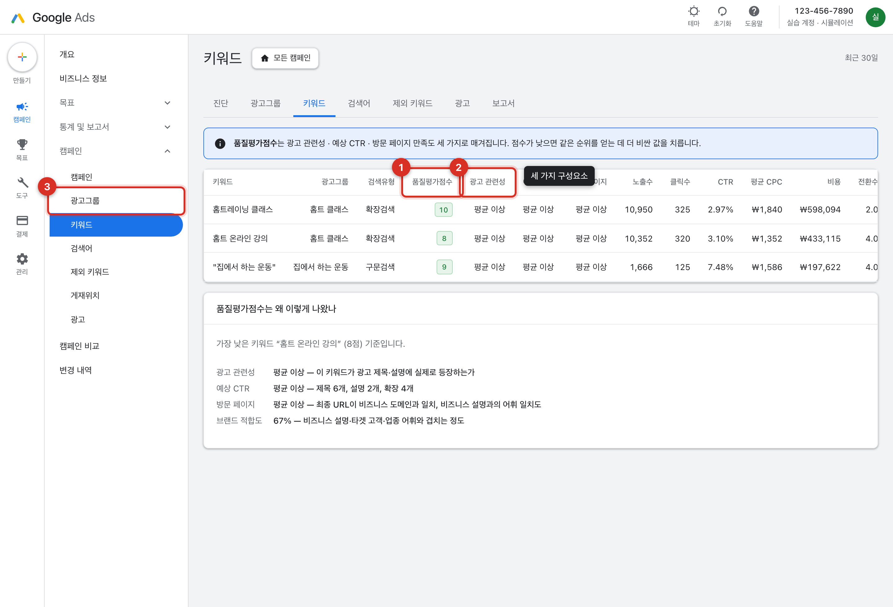
품질평가점수 — 1~10점. 높을수록 같은 순위를 더 싸게 얻습니다.
세 가지 구성요소 — 광고 관련성 / 예상 CTR / 방문 페이지 만족도.
어느 것이 "평균 미만"인지 보면 무엇을 고쳐야 할지 바로 알 수 있습니다.
광고그룹 — 이 키워드가 어느 그룹에 속하는지.
구성요소
낮을 때 뜻
고치는 법
광고 관련성
광고문구에 이 키워드가 없다
제목에 키워드를 그대로 넣거나, 그룹을 쪼갠다
예상 CTR
클릭을 유도하는 요소가 부족하다
제목을 8개 이상으로, 사이트링크·콜아웃 추가
방문 페이지 만족도
도착 페이지가 검색 의도와 안 맞다
최종 URL을 그 키워드에 맞는 페이지로
광고순위 = 입찰가 × 품질평가점수 — 점수가 낮으면 같은 순위를 얻는 데 더 많은 돈을 냅니다.
돈을 더 쓰는 대신 점수를 올리는 것이 훨씬 남는 장사입니다.
6검색어 보고서 → 제외 → 재게재
이 장이 실습의 핵심입니다. 검색 광고 운영의 8할은 이 반복 작업입니다.
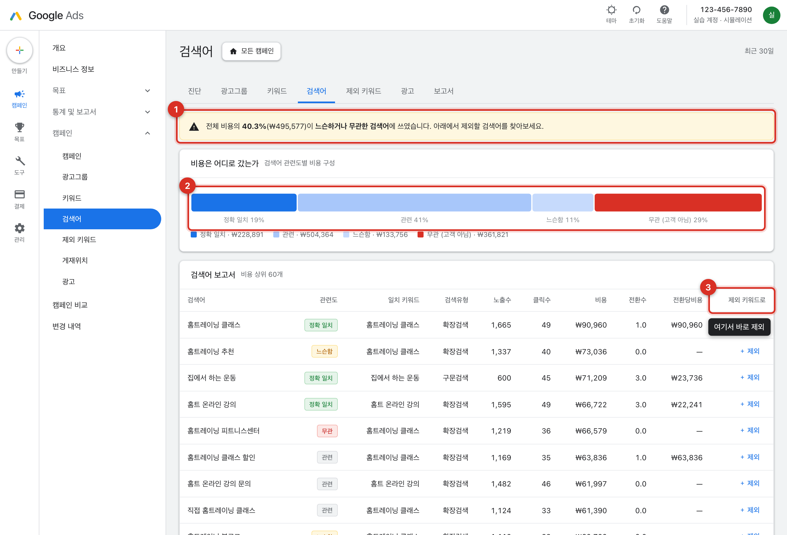
낭비 경고 — 전체 비용 중 느슨하거나 무관한 검색어에 쓰인 비중.
비용은 어디로 갔는가 — 관련도별 비용 구성.
빨간 구간이 우리 고객이 아닌 검색에 쓴 돈입니다.
＋ 제외 — 각 검색어를 바로 제외 키워드로 보낼 수 있습니다.
키워드와 검색어는 다릅니다
키워드는 내가 등록한 것, 검색어는 사용자가 실제로 친 것입니다.
확장검색을 쓰면 내가 등록하지 않은 검색어에도 광고가 나갑니다.
표의 관련도 열이 이걸 보여줍니다.
관련도
뜻
조치
정확 일치
등록한 키워드 그대로
유지
관련
의미가 이어지는 검색
대체로 유지
느슨함
연결이 약함
전환이 없으면 제외 검토
무관
우리 고객이 아님
바로 제외
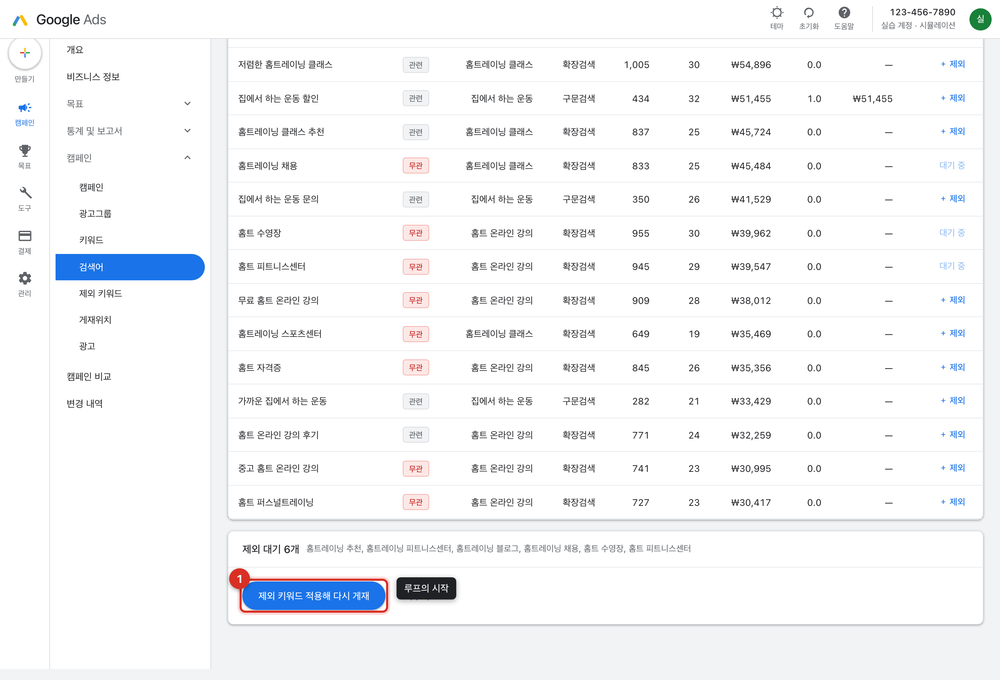
제외 키워드 적용해 다시 게재 — 대기 목록을 반영한 새 캠페인이 만들어집니다.
원래 캠페인은 그대로 남아 비교할 수 있습니다.
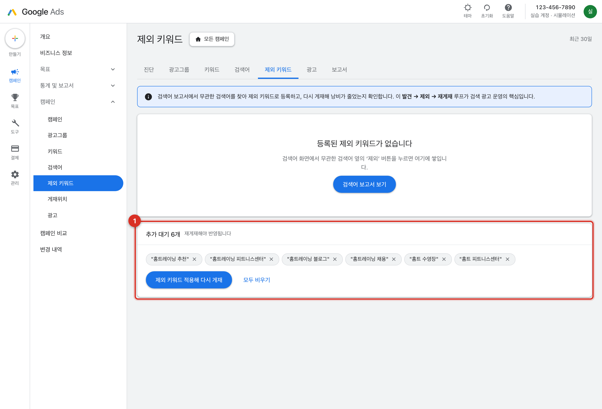
추가 대기 — 아직 반영되지 않은 목록입니다.
실제 Google Ads와 마찬가지로 설정을 바꿔도 이미 지난 성과는 바뀌지 않습니다.
다시 게재해야 효과를 확인할 수 있습니다.
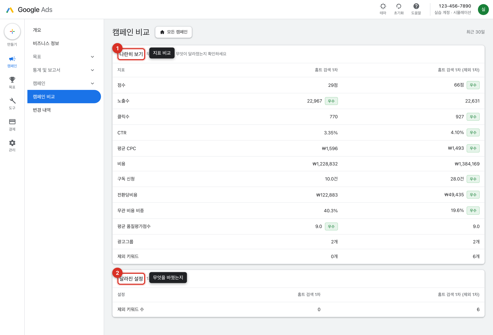
나란히 보기 — 지표별로 어느 캠페인이 나은지 우수 표시가 붙습니다.
달라진 설정 — 두 캠페인 사이에 실제로 다른 설정만 뽑아 보여줍니다.
원인과 결과를 연결하는 데 이게 가장 중요합니다.
생각해 볼 것 — 제외 키워드를 계속 추가하면 언젠가 성과가 나빠지는 지점이 옵니다.
왜 그럴까요? (힌트: 제외 범위가 넓어지면 무엇까지 막히나요?)
7디스플레이 캠페인
검색은 찾고 있는 사람에게, 디스플레이는 아직 찾고 있지 않은 사람에게 보여줍니다.
지표를 읽는 법이 완전히 다릅니다.
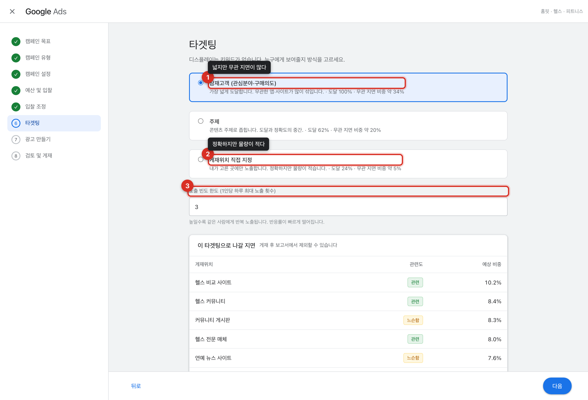
잠재고객 — 가장 넓게 도달합니다. 무관한 앱·사이트가 많이 섞입니다.
게재위치 직접 지정 — 내가 고른 곳에만. 정확하지만 물량이 적습니다.
노출 빈도 한도 — 같은 사람에게 하루 몇 번까지 보여줄지.
높이면 반응률이 빠르게 떨어집니다.
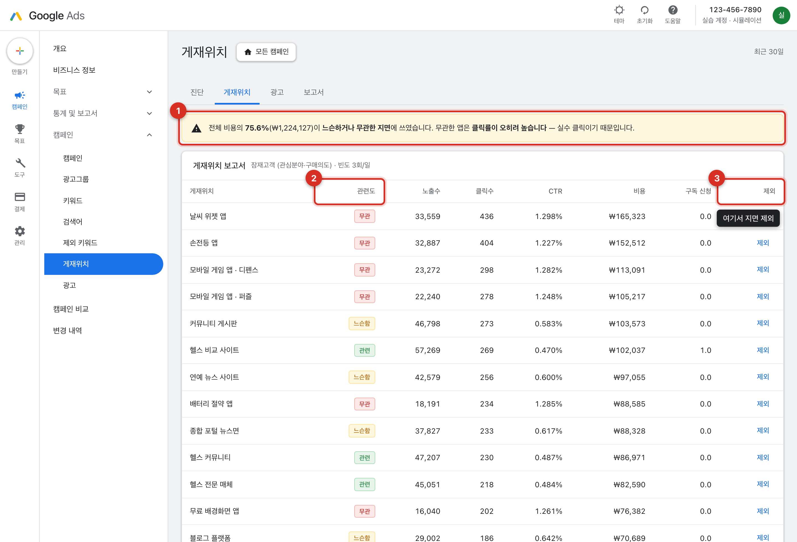
낭비 경고 — 디스플레이는 낭비 비중이 검색보다 훨씬 큽니다.
관련도 — 검색의 검색어 보고서와 같은 역할입니다.
제외 — 무관한 지면을 빼고 다시 게재합니다.
디스플레이에서 가장 중요한 교훈 — 무관한 모바일 앱은 클릭률이 오히려 높습니다.
실수로 눌린 클릭이기 때문입니다.
· 날씨 위젯 앱 — CTR 1.259%, 전환 0건 · 헬스 비교 사이트 — CTR 0.484%, 전환 0.9건 CTR만 보고 판단하면 정확히 거꾸로 갑니다.
디스플레이 캠페인을 하나 만들어 게재하세요. 타겟팅은 잠재고객, 빈도는 3회.
게재위치 화면에서 관련도가 무관인 지면을 모두 제외하고 다시 게재하세요.
검색 캠페인과 디스플레이 캠페인의 CTR·전환율·전환당비용을 비교해 표로 정리하세요.
생각해 볼 것 — 디스플레이의 전환당비용이 검색보다 훨씬 비싸다면,
디스플레이는 쓸모없는 걸까요? 어떤 상황에서 디스플레이가 필요할까요?
8보고서 내려받기
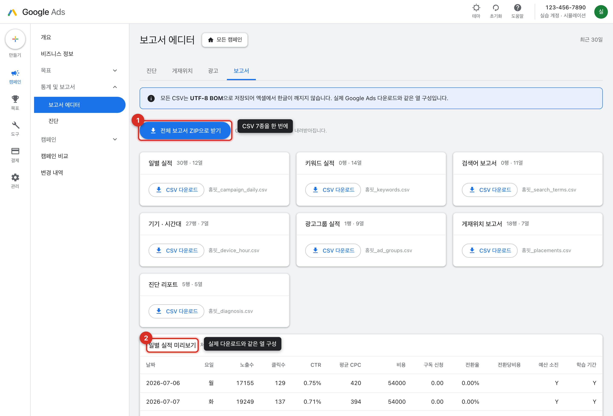
전체 보고서 ZIP으로 받기 — CSV 7종이 한 파일로 묶여 받아집니다.
브라우저가 여러 파일 동시 다운로드를 막기 때문에 ZIP으로 제공합니다.
미리보기 — 실제 Google Ads 다운로드와 같은 열 구성입니다.
보고서
무엇을 보나
일별 실적
날짜별 노출·클릭·비용·전환. 예산 소진일과 학습 기간 표시 포함
키워드 실적
키워드별 품질평가점수 3요소와 성과
검색어 보고서
실제 검색어와 관련도. 제외 키워드 후보를 찾는 곳
광고그룹 실적
그룹별 평균 품질평가점수와 성과
게재위치 보고서
디스플레이 지면별 성과
기기 · 시간대
입찰 조정의 근거가 되는 분포
진단 리포트
발견된 문제·근거·조치 전체
엑셀에서 한글이 깨진다면 — 이 CSV는 UTF-8 BOM으로 저장되어 있어
보통은 그냥 열립니다. 그래도 깨진다면 엑셀에서 데이터 → 텍스트/CSV 가져오기로
원본 파일 형식을 UTF-8로 지정해 여세요.
가장 성과가 좋았던 캠페인의 보고서를 ZIP으로 내려받으세요.
일별 실적 CSV를 엑셀로 열어 전환당비용이 가장 낮은 날과 가장 높은 날을 찾으세요.
그 차이가 설정 때문인지, 요일 때문인지, 그냥 운인지 판단해 보세요.
A부록 · 실습 과제 6종
각 과제는 설정 하나만 바꾸고 나머지는 동일하게 두는 것이 원칙입니다.
그래야 원인을 특정할 수 있습니다.
과제 1 · 검색유형 비교
같은 키워드를 모두 확장검색으로 한 캠페인과 모두 구문검색으로 한 캠페인을 각각 게재하고 비교하세요.
기록할 것: 노출수 · CTR · 무관 비용 비중 · 전환당비용
과제 2 · 광고그룹 분리 효과
키워드 6개를 한 그룹에 넣은 캠페인과 주제별 3그룹으로 나눈 캠페인을 비교하세요.
나눈 쪽은 각 그룹의 광고 제목에 그 그룹의 키워드를 넣어야 합니다.
기록할 것: 그룹별 평균 품질평가점수 · 평균 CPC · 전환당비용
과제 3 · 전환 정의 바꿔보기
캠페인은 그대로 두고 전환 카테고리만 구독 신청 → 페이지 조회로 바꾸세요.
기록할 것: 전환수 · 전환당비용 · ROAS.
그리고 "이 보고서로 대표를 설득할 수 있는가?"에 답하세요.
과제 4 · 망가뜨려 보기
잘 만든 캠페인에서 하나씩만 망가뜨려 각각 어떤 지표가 무너지는지 확인하세요.
망가뜨릴 것
예상되는 증상
최종 URL을 다른 도메인으로
?
광고 제목을 키워드와 무관하게
?
일일 예산을 1/10로
?
전환 추적 끄기
?
위치를 전 세계로
?
과제 5 · 입찰 조정으로 개선하기
기기·시간대 보고서를 보고 전환당비용이 가장 나쁜 기기의 입찰을 낮추고
가장 좋은 기기를 올려 다시 게재하세요.
과제 6 · 목표 달성하기 (종합)
지금까지 배운 것을 모두 써서 실습 목표(구독 신청 40건, 전환당비용 25,000원 이하)에
최대한 가깝게 만들어 보세요. 몇 차까지 갔는지, 각 차수에서 무엇을 바꿨는지 기록하세요.
B부록 · 지표 사전
지표
계산
읽는 법
노출수
광고가 보인 횟수
도달의 크기
노출 점유율
실제 노출 ÷ 노출 가능했던 총량
낮으면 입찰이나 예산이 부족하다
노출 손실(예산)
예산이 떨어져 못 나간 비중
높으면 예산을 올리거나 키워드를 줄인다
노출 손실(순위)
광고순위가 낮아 못 나간 비중
높으면 입찰가나 품질평가점수를 올린다
CTR
클릭수 ÷ 노출수
광고가 매력적인가. 검색 2~8%가 보통
평균 CPC
비용 ÷ 클릭수
클릭 1번의 값
전환율
전환수 ÷ 클릭수
온 사람이 실제로 행동했는가
전환당비용(CPA)
비용 ÷ 전환수
고객 1명 데려오는 값. 가장 중요
ROAS
매출 ÷ 광고비
1배면 본전. 광고비만 회수한 것
품질평가점수
1~10점
광고 관련성 + 예상 CTR + 방문 페이지
광고순위
입찰가 × 품질평가점수
순위를 정하는 값. 돈만으로 정해지지 않는다
자주 헷갈리는 것
A
B
차이
키워드
검색어
키워드는 내가 등록한 것, 검색어는 사용자가 실제로 친 것
타겟 CPA
목표 전환당비용
타겟 CPA는 입찰 설정, 목표는 채점 기준
제외 키워드
키워드 삭제
제외는 그 검색에 안 나가게 막는 것, 삭제는 입찰을 그만두는 것
CTR
전환율
CTR은 광고의 매력, 전환율은 페이지와 상품의 설득력
C부록 · 강사용 운영 노트
수업 진행 제안 (2시간)
시간
내용
0~15분
도구 접속, 비즈니스 정보 입력 (1장). 각자 다른 브랜드를 쓰게 하면 뒤에서 비교가 풍부해집니다.
15~30분
전환 액션 정의 (2장). 카테고리 선택이 왜 중요한지 여기서 확실히 잡습니다.
30~60분
첫 캠페인 게재 (3장). 제외 키워드는 비워 두게 합니다.
60~75분
결과 읽기 (4~5장). 점수가 낮게 나오는 게 정상임을 먼저 말해 주세요.
75~105분
제외 키워드 루프 (6장). 이 실습의 핵심. 최소 2회 반복시킵니다.
105~120분
디스플레이 (7장) + 보고서 다운로드 (8장) + 발표
점수 기준
점수
판정
의미
80 이상
우수
목표를 넘겼고 낭비도 통제됨
60~79
합격
방향이 맞음. 세부 튜닝 여지 있음
40~59
개선 필요
큰 문제 1~2개가 성과를 누르고 있음
40 미만
재설계 필요
기본 설정부터 다시
첫 게재에서 30~40점이 나오는 것이 정상입니다. 낮게 나와야 고칠 거리가 생깁니다.
수강생이 자주 막히는 지점
"노출이 아예 안 나와요" — 타겟 CPA를 목표값(25,000원)으로 넣은 경우가 대부분입니다.
권장 범위 버튼을 쓰게 하세요.
"전환이 0이에요" — 전환 추적을 껐거나 전환 액션을 저장하지 않은 경우입니다.
"제외했는데 안 바뀌어요" — 다시 게재를 누르지 않은 것입니다.
실제 광고도 지난 성과는 소급되지 않는다는 점을 짚어 주세요.
"점수가 왔다갔다 해요" — 확률 기반이라 정상입니다.
전환 12건이면 표준편차가 약 3.5라는 점을 알려 주세요. 오히려 좋은 교육 기회입니다.
토론 주제
클릭률이 높은 광고가 항상 좋은 광고인가?
전환 정의를 느슨하게 잡으면 누가 이득이고 누가 손해인가?
제외 키워드를 계속 늘리면 어디서 멈춰야 하는가?
브랜드 키워드는 싸고 잘 전환되는데, 왜 그것만으로는 성장할 수 없는가?
도구 정보 — 이 실습 도구는 오픈소스입니다.
수정하거나 다른 업종용으로 바꿔 쓸 수 있습니다.
실습 링크 · redskio.github.io/google-ads-search-sim 소스 · github.com/redskio/google-ads-search-sim